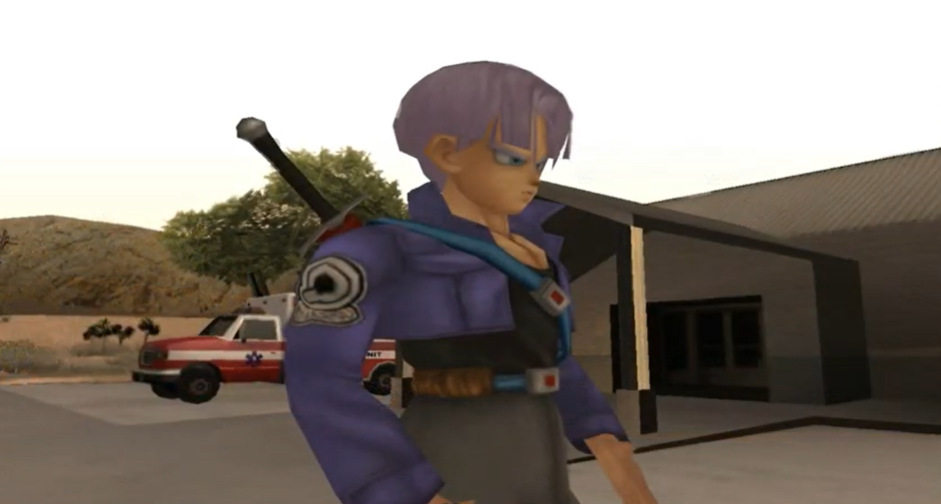
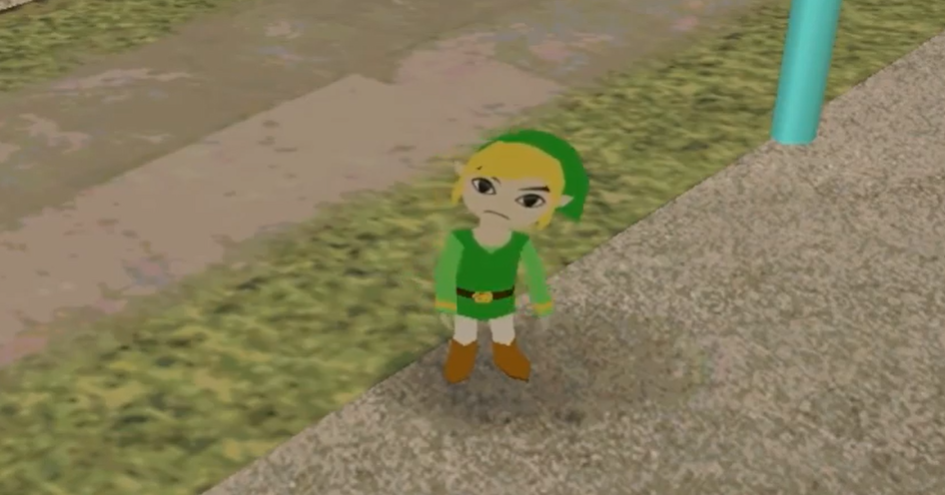
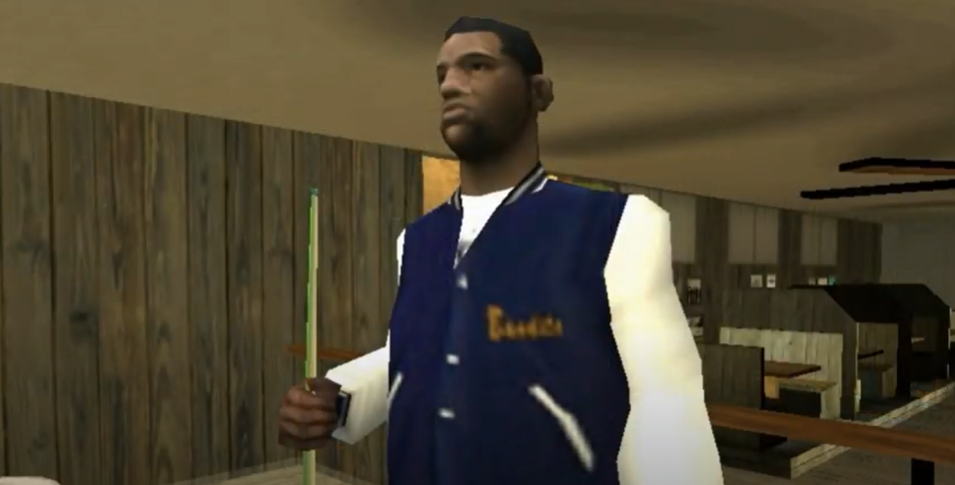
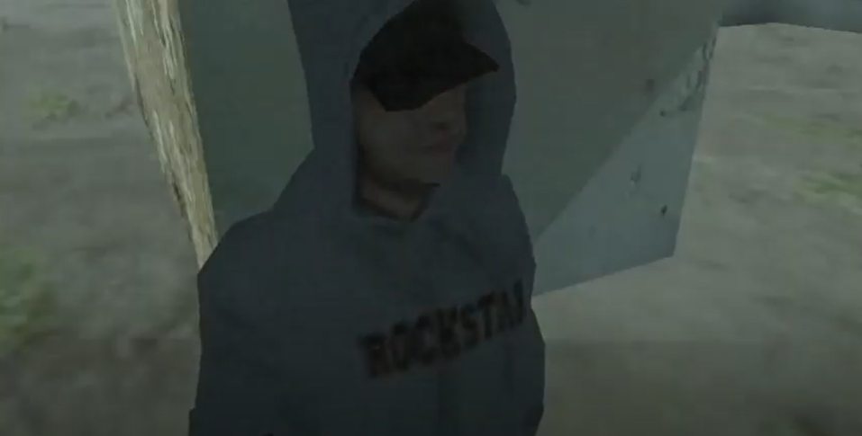
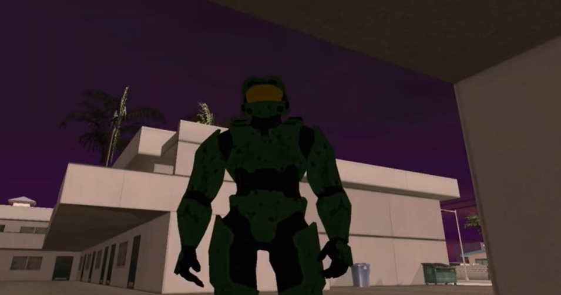
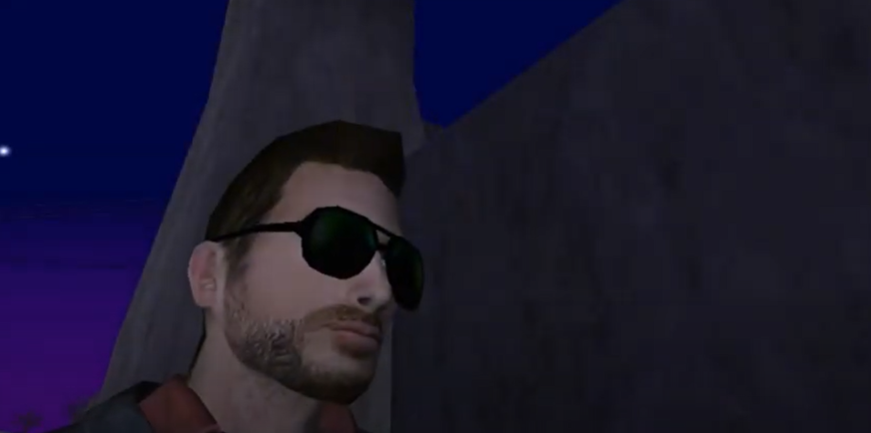

Contratados da MIB

Trunks
Ele foi contratado como freelancer pela MIB e atua na pequena cidade de Angel Pine. Ele é muito poderoso e à prova de balas.
Dublador: Luis Fernando

Link
Ele também age na região perto de Angel Pine como um freelancer da MIB. É pequeno, mas sempre carrega uma Desert Eagle.
Dublador: Igor Gundim

Johnny Joe
Ele faz parte de uma dupla dos vários caçadores que estão sendo pagos pela MIB para caçarem monstros por San Andreas. Sua área de atuação é em San Fierro junto com Edgar Pow.
Dublador: Luiz Henrique

Edgar Pow
Ele é a dupla de Johnny Joe. Ele tem poderes de localizar qualquer coisa em San Andreas.
Dublador: Fábio Leite

Master Chief
Um homem de armadura que apareceu em San Andreas dizendo que precisava encontrar alguns “amigos” que estavam em perigo. Ele também diz que veio do espaço.
Dublador: Diego Porfírio

Jen Sanders
Um freelancer que conseguiu um contrato oficial com a MIB. Ele é fã dos Mythbusters.
Dublador: Janio Janio